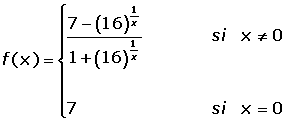

Ejercicios del teorema de Bolzano
1Demuestra que la función f(x) = x2 − 4x + 2 corta al eje de las abscisas en el intervalo [0,2].¿Se puede decir lo mismo de la función:  ?
?
2Sea la función:
¿Se puede afirmar que f(x) está acotada en el intervalo [1,4]?
3Sea la función f(x)= x2 + 1. ¿Se puede afirmar que la función toma todos los valores del intervalo [1,5]?
4Utilizando el teorema de Bolzano, demostrar que la ecuación: x3 + x − 5 = 0, tiene al menos una solución x = a tal que 1 < a < 2.
5Sea la función f(x) = x3 − x2 + 1. ¿Se puede afirmar que existe al menos un punto c en el interior del intervalo [1,2] tal que f(c) = 0?
6Justificar que la función polinómica f(x) = x3 + x + 1 tiene un cero comprendido entre −1 y 0.
7Demostrar que la ecuación e−x + 2 = x tiene al menos una solución real.
8Demostrar que existe algún número real x tal que sen x = x.
9Dada la función:

Demuestra que existe un punto del intervalo abierto (2, 4) en el que f toma el valor 1.
- 1
- 2
- 3
- 4
- 5
- 6
- 7
- 8
- 9
Ejercicio 1 resuelto
Demuestra que la función f(x) = x2 − 4x + 2 corta al eje de las abscisas en el intervalo [0,2].¿Se puede decir lo mismo de la función:  ?
?
La primera función es continua en toda  .
.
f(0) = 02 − 4 · 0 + 2 > 0.
f(2) = 22 − 4 · 2 + 2 < 0.
Como se cumple el teorema de Bolzano, existe al menos un c que pertenece al intervalo (0, 2) que corta al eje de abscisas.
No podemos afirmar lo mismo de la segunda función ya que no es continua en x = 1.
Ejercicio 2 resuelto
Sea la función:
¿Se puede afirmar que f(x) está acotada en el intervalo [1,4]?
Por no ser continua f(x) en x = 1, la función no es continua en el intervalo cerrado [1,4], como consecuencia no podemos afirmar que la función esté acotada en dicho intervalo.
Ejercicio 3 resuelto
Sea la función f(x)= x2 + 1. ¿Se puede afirmar que la función toma todos los valores del intervalo [1,5]?
x2 + 1 = 1 x = 0
x2 + 1 = 5 x = 2
La función es continua en toda R por ser una función polinómica.
Es en el intervalo [0,2] donde se verifica que f(0) = 1 y f(2)= 5.
Por la propiedad de Darboux, la función alcanza todos los valores comprendidos en el intervalo [1,5].
Ejercicio 4 resuelto
Utilizando el teorema de Bolzano, demostrar que la ecuación: x3 + x − 5 = 0, tiene al menos una solución x = a tal que 1< a <2.
f(x) es continua en [1,2]
f(1) = 13 + 1 − 5 = −3 < 0
f(2) = 23 + 2 − 5 = 5 > 0
Por cumplirse las tres propiedades anteriores según el teorema de Bolzano, existe c ∈ (1,2) tal que:
f(c) = 0 c3 + c − 5 = 0.
Por tanto existe al menos una solución real a la ecuación x3 + x − 5 = 0.
Ejercicio 5 resuelto
Sea la función f(x) = x3 − x2 + 1. ¿Se puede afirmar que existe al menos un punto c en el interior del intervalo [1,2] tal que f(c) = 0?
f(x) es continua en [1,2].
f(1) = 13 − 12 + 1 = 1 > 0.
f(2) = 23 − 22 + 1 = 5 > 0.
No puede aplicarse el teorema de Bolzano porque no cambia de signo.
Ejercicio 6 resuelto
Justificar que la función polinómica f(x) = x3 + x + 1 tiene un cero comprendido entre −1 y 0.
Por ser polinómica la función es continua en el intervalo [−1, 0].
f(−1) = (−1)3 + (−1) + 1 = −1 < 0.
f(0) = 0 + 0 + 1.
Por cumplirse las tres propiedades anteriores según el teorema de Bolzano, existe c ∈ (−1, 0) tal que:
f(c) = 0
Ejercicio 7 resuelto
Demostrar que la ecuación e−x + 2 = x tiene al menos una solución real.
La función es continua en el intervalo [0, 3].
f(0) = e0 + 2 − 0 > 0.
f(3) = e—3 + 2 − 3 < 0.
Por cumplirse las tres propiedades anteriores según el teorema de Bolzano, existe c ∈ (0, 3) tal que:
f(c) = 0 e−c + 2 = c.
Por tanto existe al menos una solución real a la ecuación e−x + 2 = x.
Ejercicio 8 resuelto
Demostrar que existe algún número real x tal que sen x = x.
Consideremos la función f(x) = sen x − x.
Es continua en toda .
f(−π) = sen (−π) − (-π) = 0 + π = π > 0
f(π) = sen (π) − (π) = 0 − π = −π < 0
Por cumplirse las tres propiedades anteriores según el teorema de Bolzano, existe c ∈ (−π. π) tal que:
f(c) = 0 sen c = c
Por tanto existe al menos una solución real a la ecuación sen x = x.
Ejercicio 9 resuelto
Dada la función:
Demuestra que existe un punto del intervalo abierto (2, 4) en el que f toma el valor 1.
La función exponencial es positiva para toda x ∈ , por tanto el denominador de la función no se puede anular.
Sólo hay duda de la continuidad en x = 0, que está fuera del intervalo a estudiar, por tanto f(x) es continua en [2. 4].
Tomemos la función g definida por g(x) = f(x) − 1.
g es continua en el intervalo [2. 4].

Como se cumplen las tres propiedades anteriores según el teorema de Bolzano, existe c ∈ (2, 4) tal que:
 Ejercicios
Ejercicios